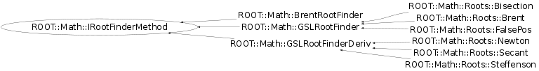

Function Members (Methods)
This is an abstract class, constructors will not be documented.
Look at the header to check for available constructors.
public:
| virtual | ~IRootFinderMethod() |
| virtual int | Iterate() |
| virtual int | Iterations() const |
| virtual const char* | Name() const |
| ROOT::Math::IRootFinderMethod& | operator=(const ROOT::Math::IRootFinderMethod&) |
| virtual double | Root() const |
| virtual bool | SetFunction(const ROOT::Math::IGradFunction&, double) |
| virtual bool | SetFunction(const ROOT::Math::IGenFunction&, double, double) |
| virtual bool | Solve(int maxIter = 100, double absTol = 1E-8, double relTol = 1E-10) |
| virtual int | Status() const |
Class Charts
{kind=link}
{kind=link}
{kind=link}
{kind=link}

Function documentation
bool SetFunction(const ROOT::Math::IGradFunction& , double )
Common functionality Sets the function for algorithms using derivatives.
bool SetFunction(const ROOT::Math::IGenFunction& , double , double )
Sets the function for the rest of the algorithms. The parameters set the interval where the root has to be calculated.
bool Solve(int maxIter = 100, double absTol = 1E-8, double relTol = 1E-10)
Methods to be Implemented in the derived classes
Stimates the root for the function.
\@param maxIter maximum number of iterations.
\@param absTol desired absolute error in the minimum position.
\@param absTol desired relative error in the minimum position.
int Iterate()
This method is implemented only by the GSLRootFinder and GSLRootFinderDeriv classes and will return an error if it's not one of them.
int Iterations() const
Return number of iterations used to find the root
Must be implemented by derived classes
{ return -1; }